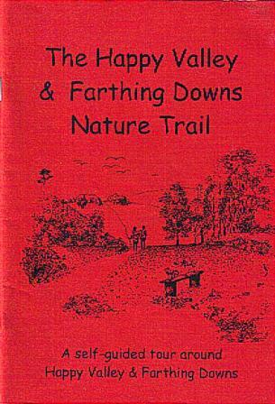

Walk
From gentle strolls to longer rambles. Follow ancient trackways and discover hidden corners.
View walks →Two beautiful green spaces, rich with wildlife, history, and breathtaking views. Protected by volunteers since 2005.
Plan your visit Join for £5/yearSaxon burial mounds. Rare orchids. Butterflies dancing over wildflower meadows. Red kites circling overhead. All just a short train ride from central London.
From gentle strolls to longer rambles. Follow ancient trackways and discover hidden corners.
View walks →
Wildlife guides, archaeology trails, and our famous audio Nature Trail with 29 stops.
Start exploring →Help protect these special places for future generations. Membership from just £5/year.
Become a Friend →Protected chalk grassland home to rare wildflowers and butterflies
Saxon burial mounds, Celtic field boundaries, Neolithic trackways
Direct trains to Coulsdon South from Victoria and London Bridge
Deer, foxes, dormice, over 30 butterfly species, red kites and more
Since 2005, Friends of Farthing Downs & Happy Valley have worked to preserve, protect, and promote these ancient landscapes. Join us.
Join for £5/yearPhotos shared by people who love the Downs